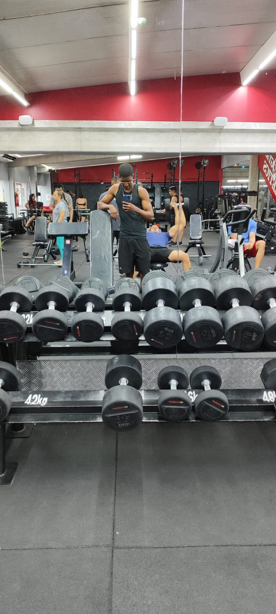
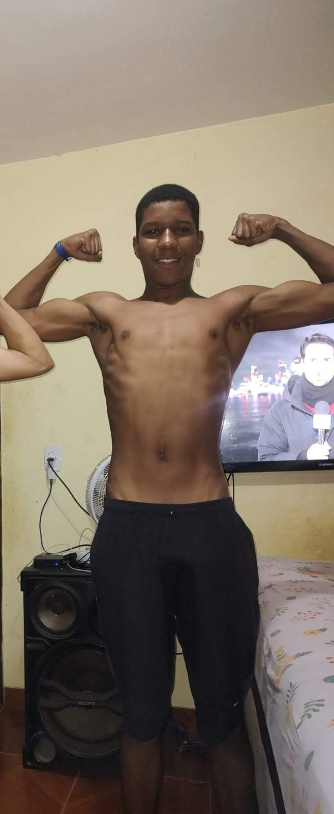
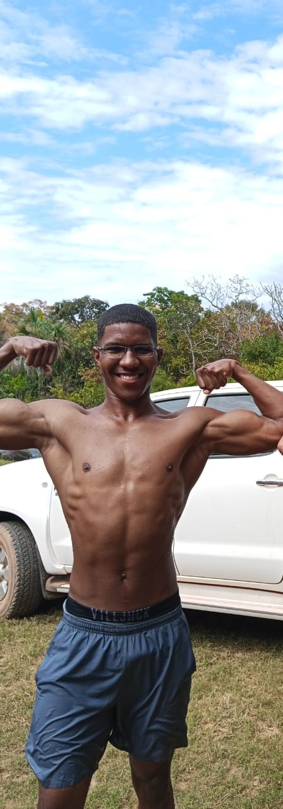

Disciplina é o que sobra quando a motivação acaba
Sou o Roniel. Treino cinco vezes por semana e quero levar isso pela vida inteira. Este site mostra como eu faço isso.
Ver minha rotina0
dias de treino seguidos
Carregando o treino de hoje...

Sobre mim
Sou estudante de engenharia de software e treino há dois anos. Comecei porque não estava confortável com o meu corpo, e ver a minha mãe treinando me mostrou que dava para começar.
Treinei por um ano, parei por outro e voltei há um ano. Antes, minha rotina era ir para a escola e só. Hoje a academia é parte do meu dia, e a meta é que continue sendo para sempre.
O que a academia é para mim
- Disciplina
- Ir treinar nos dias sem vontade é o que mais me ensina.
- Saúde
- Quero uma vida saudável a longo prazo.
- Descompressão
- É o momento em que eu desligo de todo o resto.
- Físico
- Ver a carga subir e o corpo mudar.
Meu exercício favorito é a barra fixa. O que eu mais evito é o agachamento, mas eu faço do mesmo jeito.
No curto prazo, quero um bom emprego. No longo prazo, uma vida saudável, carro, casa, filhos e o shape mantido.
Minha rotina
Cinco treinos por semana, sempre à tarde, entre 2 horas e 2 horas e meia. O dia de hoje fica destacado.
- SegundaPushPeito, ombros e tríceps
- TerçaPullCostas e bíceps, com barra fixa
- QuartaLegsPernas, com agachamento
- QuintaDescansoRecuperar também é treinar
- SextaUpperParte superior completa
- SábadoLowerParte inferior completa
- DomingoDescansoSono, comida e cabeça fresca
Minha evolução
Acompanho tudo com fotos e com a progressão de carga. Arraste o controle para comparar o antes e o depois.
-
Há 2 anos: o começo
Comecei a treinar e fui constante por um ano.
-
Há 1 ano: a pausa
Fiquei um ano parado. Foi o que me fez entender o valor de não parar.
-
Hoje: a volta
Um ano de treino contínuo desde que voltei, com carga subindo e fotos para provar.


Antes DepoisTreino em movimento
Um pouco do que acontece dentro da academia.
Dicas de quem não desiste
-
Nunca desista
Os dias ruins vão existir. Quem continua é quem chega lá.
-
Tenha paciência com a evolução
Se ela demorar para aparecer, não desanime. Ela aparece para quem continua.
-
Coma proteína
É a base para o músculo se recuperar e crescer.
-
Não ligue para o que pensam
Ninguém sabe o seu motivo. Treine por você.
-
Seja constante
Treino regular vence treino perfeito que acontece uma vez.
-
Durma bem
Eu tento chegar às 8 horas de sono. É nelas que o corpo se refaz.
Mito
“Panturrilha não cresce com treino, o tamanho dela é sempre o mesmo por causa da genética.”
O que eu penso
A genética influencia, sim, mas a panturrilha responde a treino. O segredo é carga, amplitude completa e frequência, como em qualquer outro músculo.
A motivação te leva à academia. A disciplina te faz voltar amanhã.
Contato
Quer trocar ideia sobre treino ou sobre tecnologia? Me chame.